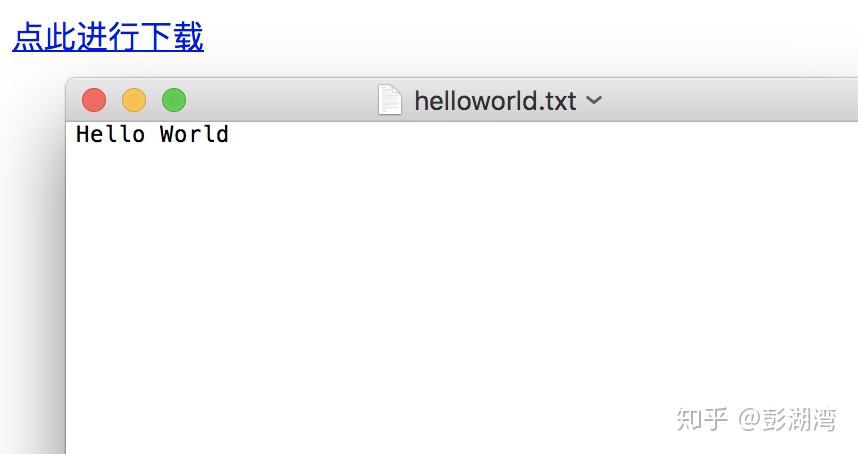

# 聊聊JS的二进制家族：Blob、ArrayBuffer和Buffer
前端较少涉及对二进制数据的处理，但即便如此，我们偶尔总能在角落里看见它们的身影，今天我们就来聊一聊JS的二进制家族：Blob、ArrayBuffer和Buffer（Buffer由Node.js提供）
# 概述
- Blob: 前端的一个专门用于支持文件操作的二进制对象
- ArrayBuffer：前端的一个通用的二进制缓冲区，类似数组，但在API和特性上却有诸多不同
- Buffer：Node.js提供的一个二进制缓冲区，常用来处理I/O操作
这篇文章的内容主要就聊一聊这一家子的人际关系展开。
复杂的人际关系网.jpg
 下面就来一一介绍
下面就来一一介绍
# Blob
我们首先来介绍Blob，Blob是用来支持文件操作的。简单的说：在JS中，有两个构造函数 File 和 Blob, 而File继承了所有Blob的属性。
所以在我们看来，File对象可以看作一种特殊的Blob对象。
在前端工程中，我们在哪些操作中可以获得File对象呢？ 请看：
 （备注：目前 File API规范的状态为Working Draft）
（备注：目前 File API规范的状态为Working Draft）
我们上面说了，File对象是一种特殊的Blob对象，那么它自然就可以直接调用Blob对象的方法。让我们看一看Blob具体有哪些方法，以及能够用它们实现哪些功能
## Blob实战
通过window.URL.createObjectURL方法可以把一个blob转化为一个Blob URL，并且用做文件下载或者图片显示的链接。
Blob URL所实现的下载或者显示等功能，仅仅可以在单个浏览器内部进行。而不能在服务器上进行存储，亦或者说它没有在服务器端存储的意义。
下面是一个Blob的例子，可以看到它很短
blob:d3958f5c-0777-0845-9dcf-2cb28783acaf
和冗长的Base64格式的Data URL相比，Blob URL的长度显然不能够存储足够的信息，这也就意味着它只是类似于一个浏览器内部的“引用“。从这个角度看，Blob URL是一个浏览器自行制定的一个伪协议
Blob实现下载文件
我们可以通过window.URL.createObjectURL，接收一个Blob（File）对象，将其转化为Blob URL,然后赋给 a.download属性，然后在页面上点击这个链接就可以实现下载了
<!-- html部分 -->
<a id="h">点此进行下载</a>
<!-- js部分 -->
<script>
var blob = new Blob(["Hello World"]);
var url = window.URL.createObjectURL(blob);
var a = document.getElementById("h");
a.download = "helloworld.txt";
a.href = url;
</script>
(备注：download属性不兼容IE, 对IE可通过window.navigator.msSaveBlob方法或其他进行优化)
运行结果

Blob实现图片本地显示
window.URL.createObjectURL生成的Blob URL还可以赋给img.src，从而实现图片的显示
<!-- html部分 -->
<input type="file" id='f' />
<img id='img' style="width: 200px;height:200px;" />
<!-- js部分 -->
<script>
document.getElementById('f').addEventListener('change', function (e) {
var file = this.files[0];
const img = document.getElementById('img');
const url = window.URL.createObjectURL(file);
img.src = url;
img.onload = function () {
// 释放一个之前通过调用 URL.createObjectURL创建的 URL 对象
window.URL.revokeObjectURL(url);
}
}, false);
</script>
运行结果
 Blob实现文件分片上传
Blob实现文件分片上传
- 通过Blob.slice(start,end)可以分割大Blob为多个小Blob
- xhr.send是可以直接发送Blob对象的
前端
<!-- html部分 -->
<input type="file" id='f' />
<!-- js部分 -->
<script>
function upload(blob) {
var xhr = new XMLHttpRequest();
xhr.open('POST', '/ajax', true);
xhr.setRequestHeader('Content-Type', 'text/plain')
xhr.send(blob);
}
document.getElementById('f').addEventListener('change', function (e) {
var blob = this.files[0];
const CHUNK_SIZE = 20; .
const SIZE = blob.size;
var start = 0;
var end = CHUNK_SIZE;
while (start < SIZE) {
upload(blob.slice(start, end));
start = end;
end = start + CHUNK_SIZE;
}
}, false);
</script>
Node端(Koa)
app.use(async (ctx, next) => {
await next();
if (ctx.path === '/ajax') {
const req = ctx.req;
const body = await parse(req);
ctx.status = 200;
console.log(body);
console.log('---------------');
}
});
文件内容
According to the Zhanjiang commerce bureau, the actual amount of foreign capital
utilized in Zhanjiang from January to October this year was
运行结果
本地读取文件内容
如果想要读取Blob或者文件对象并转化为其他格式的数据，可以借助FileReader对象的API进行操作
- FileReader.readAsText(Blob)：将Blob转化为文本字符串
- FileReader.readAsArrayBuffer(Blob)： 将Blob转为ArrayBuffer格式数据
- FileReader.readAsDataURL(): 将Blob转化为Base64格式的Data URL
下面我们尝试把一个文件的内容通过字符串的方式读取出来
<input type="file" id='f' />
<script>
document.getElementById('f').addEventListener('change', function (e) {
var file = this.files[0];
const reader = new FileReader();
reader.onload = function () {
const content = reader.result;
console.log(content);
}
reader.readAsText(file);
}, false);
</script>
运行结果
上面介绍了Blob的用法，我们不难发现，Blob是针对文件的，或者可以说它就是一个文件对象，同时呢我们发现Blob欠缺对二进制数据的细节操作能力，比如如果如果要具体修改某一部分的二进制数据，Blob显然就不够用了，而这种细粒度的功能则可以由下面介绍的ArrayBuffer来完成。
# ArrayBuffer
让我们用一张图看下ArrayBuffer的大体的功能
同时要说明，ArrayBuffer跟JS的原生数组有很大的区别，如图所示
下面一一进行细节的介绍
# ArrayBuffer实战
通过ArrayBuffer的格式读取本地数据
document.getElementById('f').addEventListener('change', function (e) {
const file = this.files[0];
const fileReader = new FileReader();
fileReader.onload = function () {
const result = fileReader.result;
console.log(result)
}
fileReader.readAsArrayBuffer(file);
}, false);
运行结果
通过ArrayBuffer的格式读取Ajax请求数据
- 通过xhr.responseType = "arraybuffer" 指定响应的数据类型
- 在onload回调里打印xhr.response
前端
const xhr = new XMLHttpRequest();
xhr.open("GET", "ajax", true);
xhr.responseType = "arraybuffer";
xhr.onload = function () {
console.log(xhr.response)
}
xhr.send();
Node端
const app = new Koa();
app.use(async (ctx) => {
if (pathname = '/ajax') {
ctx.body = 'hello world';
ctx.status = 200;
}
}).listen(3000)
运行结果
通过TypeArray对ArrayBuffer进行写操作
const typedArray1 = new Int8Array(8);
typedArray1[0] = 32;
const typedArray2 = new Int8Array(typedArray1);
typedArray2[1] = 42;
console.log(typedArray1);
// output: Int8Array [32, 0, 0, 0, 0, 0, 0, 0]
console.log(typedArray2);
// output: Int8Array [32, 42, 0, 0, 0, 0, 0, 0]
通过DataView对ArrayBuffer进行写操作
const buffer = new ArrayBuffer(16);
const view = new DataView(buffer);
view.setInt8(2, 42);
console.log(view.getInt8(2));
// 输出: 42
# Buffer
Buffer是Node.js提供的对象，前端没有。 它一般应用于IO操作，例如接收前端请求数据时候，可以通过以下的Buffer的API对接收到的前端数据进行整合
## Buffer实战
例子如下
// Node端（Koa）
const app = new Koa();
app.use(async (ctx, next) => {
if (ctx.path === '/ajax') {
const chunks = [];
const req = ctx.req;
req.on('data', buf => {
chunks.push(buf);
})
req.on('end', () => {
let buffer = Buffer.concat(chunks);
console.log(buffer.toString())
})
}
});
app.listen(3000)
// 前端
const xhr = new XMLHttpRequest();
xhr.open("POST", "ajax", true);
xhr.setRequestHeader('Content-Type', 'text/plain')
xhr.send("asdasdsadfsdfsadasdas");
运行结果
// Node端输出
asdasdsadfsdfsadasdas
# 本文完
文章来源：https://zhuanlan.zhihu.com/p/97768916